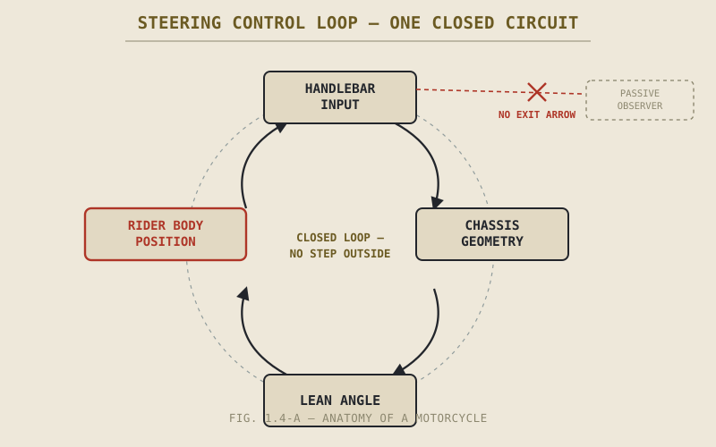

Put a 75-kilogram sandbag on a motorcycle seat, point the bike down a straight, empty road, and let it go. It will not corner. It will not balance itself through a bend, will not adjust its line when the road cambers, will not do anything a rider does except add weight. Put a rider in that same seat, and the identical machine can lean forty-five degrees into a corner, tighten its line mid-turn, and recover from a gust of crosswind without falling. Same mass, same machine, same road. What's the sandbag missing?
Chapter 1.1 promised this idea a full chapter of its own, and Chapter 1.3 handed it to us already half-built: a motorcycle is a coupled system in which suspension, chassis, tyres, and drivetrain constantly change each other's operating conditions. What that chapter didn't yet say plainly is that the rider is not watching this coupled system from outside it, occasionally reaching in to turn the bars. The rider is wired into the loop as tightly as any of those components — and unlike the sandbag, the rider is the one part of the system that can change what it's doing on purpose, faster than any of the others.
Two Kinds of Weight
Every object on a motorcycle has mass, and mass affects handling — that much is true of the sandbag, the fuel in the tank, and the rider alike. But the rider's mass is different from cargo in one decisive way: it's mass with a mind, capable of moving itself deliberately, in a fraction of a second, to change where the bike's combined centre of gravity actually sits.
Shift your weight toward the inside footpeg going into a corner, and you've moved a meaningful fraction of the bike's total mass without the bike itself doing anything. That shift changes how far the machine has to lean to hold the same line at the same speed — less lean, for the same result, because part of the work of getting the combined centre of gravity over to where it needs to be has already been done by your body instead of by tilting the chassis. Hang off the bike further, and a rider on a sportbike can hold a tighter line at a shallower lean angle than the frame geometry alone would suggest, precisely because the rider's mass isn't fixed to the frame — it's a separate, movable weight that happens to be sitting on top of it.
Cargo can only ever add to the problem the chassis and suspension have to solve. A rider can actively help solve it, or actively make it worse, dozens of times a second, without the machine changing at all.
A sandbag is a passenger. A rider is a control input that happens to also have mass — and both of those facts about the rider matter at the same time, every second the bike is moving.
Sitting Inside the Steering Loop
Chapter 1.2 explained that a motorcycle has to lean to corner, and mentioned countersteering only in passing — pushing the inside handlebar forward to initiate a lean the opposite way you'd expect — as a topic Part IV would properly unpack. It belongs here too, because it's the clearest possible proof that the rider isn't operating the steering geometry from a safe distance. The rider's hand pressure is a direct input into the same physical loop that rake, trail, and gyroscopic effects are already part of. Push the bar, and you're not overriding the bike's geometry — you're the missing variable that geometry has been waiting for the entire time it's been rolling.
This is worth pausing on, because it's easy to read "the bike stabilizes itself once it's rolling," from Chapter 1.2, and conclude the rider's steering input is a correction layered on top of an otherwise self-sufficient machine. It isn't. The self-stability a rolling motorcycle exhibits and the steering input a rider provides aren't two separate systems, one backing up the other. They're one control loop, and the maths in Part IV and Part VIII that describes it treats rider input as a term in the same equation as rake and trail, not as a footnote to it.

A control loop diagram — handlebar input, chassis geometry, lean angle, and rider body position drawn as one closed circuit, with no arrow that goes "outside" the loop to a passive observer.
The Rider as Sensor
A motorcycle's tyres are, at any instant, somewhere between full grip and no grip at all, and that margin changes constantly with surface, temperature, lean, and load — a topic Part VI and Part VIII will quantify properly. Right now, the only instrument reporting that margin back to the control system is the rider's own body: the subtle looseness transmitted through the bars just before the front tyre reaches its limit, the change in seat pressure as weight shifts under braking, the slight wriggle through the pegs that signals the rear tyre working near the edge of available traction.
No gauge on the dashboard reports any of this. There is no sensor on a typical motorcycle that measures tyre slip and displays it to the rider — the rider's hands, seat, and feet are the sensor, full stop, and the skill of reading that feedback accurately is arguably the single most important skill Part IX will spend its seventeen chapters teaching. A rider who has learned to feel that margin is operating with better information than one relying on confidence or speed alone, because they're the only instrument in the loop actually measuring it.
The Rider as Damper
Chapter 1.3 described the suspension's job as managing load that keeps changing depending on what the rest of the bike is doing. The rider's own body does a version of that same job, in parallel with the suspension, not after it. A rigid, locked-elbow grip on the bars transmits every bump straight into the chassis's steering input, effectively feeding noise into the same control loop described above. Relaxed arms and knees gripping the tank instead let the rider's limbs absorb some of that disturbance before it ever reaches the bars, functioning — mechanically, not metaphorically — as an extra layer of damping the engineers who designed the suspension were counting on being there.
This is why two riders on the identical motorcycle, over the identical bumpy road, can have completely different experiences of how "harsh" or "planted" the bike feels. The suspension hasn't changed. The rider, as a component of the system, has.
A Common Misconception, Cleared Up Early
New riders are sometimes told to relax and "let the bike do the work," and it's well-intentioned advice — tension and over-input genuinely do make a motorcycle harder to ride well. But taken too literally, it invites exactly the wrong mental model: that the ideal rider is a passive weight, minimally interfering, closer to the sandbag than to an active part of the machine.
The better version of that advice isn't "do less." It's "do less of the wrong things" — the flinching, the death-grip, the over-correction — while doing more of the right ones: reading the feedback coming up through the bars and seat, positioning your weight on purpose, and giving the steering input that a motorcycle, as Chapter 1.2 established, mechanically requires in order to turn at all. There's no version of riding well that involves contributing less. There's only a version that involves contributing more precisely.
Where This Leads
This closes the argument this book opened with in Chapter 1.1: a motorcycle is one connected system — engine, chassis, suspension, tyres, and rider — none of which can be fully understood in isolation from the others, and one of which, uniquely, can choose to change what it's doing. Chapters 1.5 and 1.6 turn from these foundational ideas to something more immediately practical: giving you the vocabulary and the reading skills to make sense of everything that follows, before Part II opens the individual-systems half of the book with the engine.
Key Concepts to Remember
- The rider's mass is fundamentally different from cargo mass: it can be repositioned deliberately and quickly to change the bike's effective centre of gravity, not just add to it.
- Countersteering shows that rider input isn't layered on top of the bike's self-stability — rider and chassis geometry form one control loop, not two separate systems.
- The rider functions as the bike's primary sensor for traction margin: no dashboard gauge reports tyre grip, only the feedback felt through bars, seat, and pegs.
- The rider's body acts as an additional, variable damper alongside the suspension — grip tension and body position change how "harsh" or "planted" an unchanged motorcycle feels.
- "Let the bike do the work" is misleading if taken as passivity. Riding well means contributing more precisely, not contributing less.
Cross-References
| ← Ch. 1.1 | First proposed that the rider completes the machine rather than merely operating it; this chapter makes the mechanical case in full. |
| ← Ch. 1.2 | Introduced countersteering and lean as mechanical requirements; this chapter places the rider's input inside that same steering loop. |
| ← Ch. 1.3 | Established the motorcycle's internal coupling and feedback loops; this chapter adds the rider as a node within that same coupled system. |
| → Ch. 4.5 | Countersteering treats rider input as a term within the steering loop, not as an external correction to it — exactly what this chapter argued. |
| → Pt. VIII | Motorcycle Physics will treat rider position as a term within the stability equations directly. (Not yet published.) |
| → Pt. IX | How to Ride — built directly on this chapter's claim that reading rider-felt feedback is a core, teachable riding skill. (Not yet published.) |